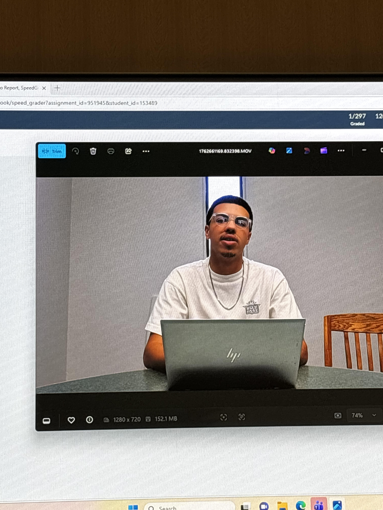
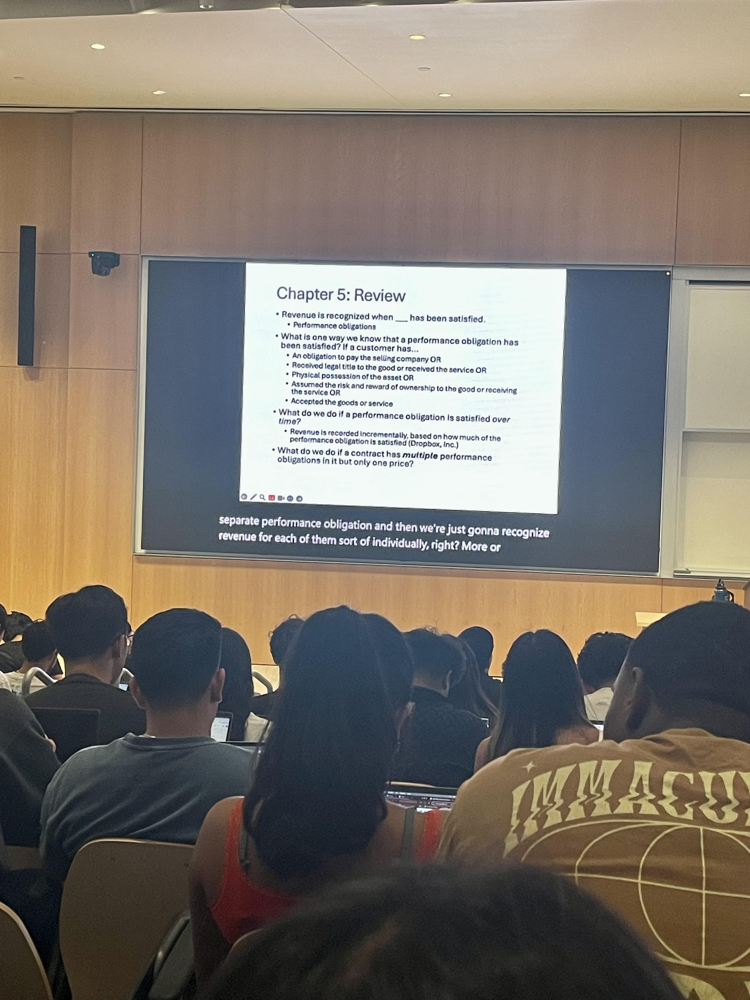
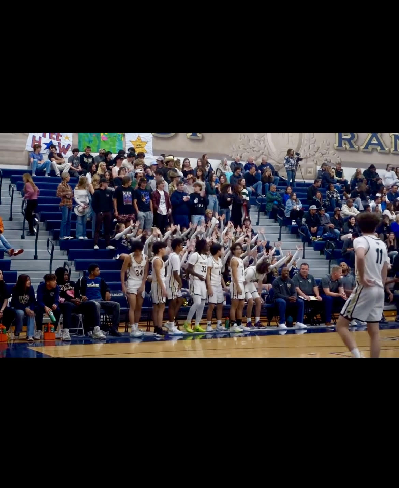

I am a dependable, detail-oriented individual who has developed strong organizational, leadership, and time-management skills through hands-on experience in both athletics operations and independent customer service work. During my junior year at West Ranch High School, I served as the boys’ basketball team manager, a role that required professionalism, initiative, and the ability to perform effectively in a fast-paced, team-oriented environment. I supported coaches and players by coordinating practice logistics, preparing equipment, maintaining uniforms, tracking game statistics, and assisting with pre-game and post-game responsibilities. This position demanded consistent reliability and attention to detail, as even minor oversights could affect team readiness and overall performance.
Serving as team manager strengthened my ability to anticipate needs, solve problems quickly, and communicate clearly with both peers and authority figures. I worked closely with coaching staff, which taught me how to follow direction accurately while also taking initiative when tasks needed to be completed independently. At the same time, collaborating with student-athletes reinforced the importance of teamwork, accountability, and mutual respect. Balancing academic commitments with team responsibilities required discipline and strong time management, helping me build habits that translate directly into professional environments. By the end of the season, I had established a reputation as someone who could be trusted to stay organized, remain composed under pressure, and contribute positively to group success.
The summer after my senior year of high school, I expanded my professional experience by working as an independent delivery driver for DoorDash. In this role, I applied many of the same skills I developed as a team manager—organization, punctuality, and problem-solving—but in a fast-moving, customer-focused setting. I was responsible for planning efficient delivery routes, verifying order accuracy, handling food carefully, and ensuring each delivery met customer expectations. Because the position required working independently, I strengthened my decision-making skills and learned how to adapt quickly to changing conditions such as traffic, time constraints, or schedule fluctuations. This experience also sharpened my customer service abilities, as I regularly communicated with restaurant staff and customers to resolve issues and maintain a professional standard of service.
Together, these experiences demonstrate my ability to succeed in both collaborative and independent roles. Managing responsibilities during my junior year showed me how to support a team and contribute behind the scenes, while my summer delivery work proved I can stay self-motivated, organized, and dependable without direct supervision. In both settings, I approached each responsibility with focus, efficiency, and a commitment to doing the job well.
I bring a strong work ethic, adaptability, and a positive attitude to every opportunity I pursue. Having succeeded in roles that required trust, responsibility, and consistency, I am prepared to contribute meaningfully in professional environments that value reliability, teamwork, and initiative.
• Carried out deliveries, working with time constraints and constant assignments
• Catered to customers' needs (where to leave deliveries, how to notify customers)
• Carried out assignments from coaches
• Managed team equipment
• Created and maintained relationships with teammates, coaches, and other managers
• Provided information about my high school to incoming freshmen and their parents
• Spoke publicly in front of a crowd of several hundred people
• Chosen to speak on the panel because of my academic excellence


